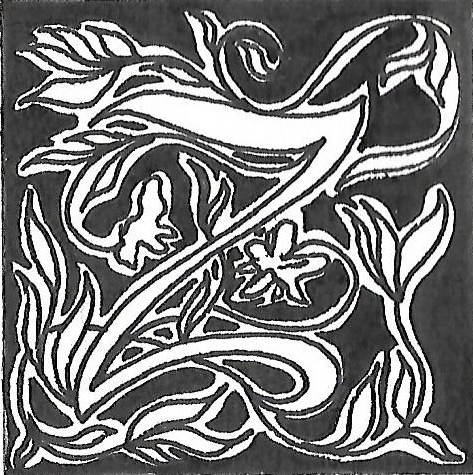

Zac Deloupy : xxx
Propos recueillis par Alix Jamet, Clara Mesnil, Ciarán Hyams
ac Deloupy déploie, à travers ses bandes dessinées, un langage visuel riche et expressif, où chaque dessin dialogue avec les mots pour créer une émotion et transmettre un message. Le texte devient ainsi le compagnon indissociable de l'image, enrichissant et amplifiant la portée narrative de chaque planche. Dans cet univers artistique, chaque détail compte. Chez Deloupy le travail esthétique n’est jamais gratuit. En effet, ses œuvres sont souvent porteuses d'un engagement social profond, abordant avec finesse des thématiques cruciales telles que l'injustice, la marginalisation et les luttes quotidiennes des individus pour leur dignité. À travers des personnages hauts en couleur et des intrigues captivantes, il invite le lecteur à réfléchir sur les enjeux de notre société, tout en lui offrant un moment d'évasion et de réflexion.
À travers ses bandes dessinées, Deloupy déploie un langage visuel riche et expressif, où chaque dessin dialogue avec les mots pour créer une émotion et transmettre un message. Dans cet univers artistique, chaque détail compte. Chez Deloupy le travail esthétique n’est jamais gratuit. En effet, ses œuvres sont souvent porteuses d'un engagement social profond, abordant avec finesse des thématiques cruciales telles que l'injustice, la marginalisation et les luttes quotidiennes des individus pour leur dignité. À travers des personnages hauts en couleur et des intrigues captivantes, il invite le lecteur à réfléchir sur les enjeux de notre société, tout en lui offrant un moment d'évasion et de réflexion.
Certains moments-clés de vos bandes dessinées se déroulent sans dialogues, laissant l’image raconter seule une partie de l’histoire. Comment décidez-vous quand laisser l’image s’exprimer sans texte ?
Le fondement de la bande dessinée réside dans l'association harmonieuse de l'image et du texte, sans qu'ils se gênent mutuellement. C'est un point que j'explique fréquemment lors de collaborations avec divers scénaristes, car je travaille avec différents scénaristes à chaque projet, et souvent avec différents éditeurs. J'explique généralement que nous élaborons un premier jet basé sur le scénario qui m'est fourni. Ensuite, ce travail prend la forme d'un crayonné, ce qui permet d'analyser ce qui fonctionne ou non dans les deux aspects, que ce soit au niveau du texte, des dialogues, ou de l'image. Il peut arriver que des ajustements soient nécessaires, que ce soit pour affiner, réduire ou amplifier certaines parties. Parfois, des éléments ne fonctionnent pas dans le texte ou dans l'image, et cette première étape permet de les identifier. Elle offre également la possibilité de supprimer des éléments textuels si l'image se suffit à elle seule. Lorsque nous lisons une bande dessinée, notre cerveau enregistre simultanément le texte et les images. Le travail de liaison entre le texte et l'image doit être parfaitement intégré, de sorte que le lecteur puisse suivre l'histoire sans buter ni sur le texte mal tourné, ni sur une image incompréhensible.
Pour rebondir là-dessus, diriez-vous que c'est plutôt le texte qui crée une image, ou l'image qui inspire le texte lorsque vous imaginez vos projets ? Est-ce que vous avez déjà une histoire visuelle en tête, ou bien un scénario directement, que vous illustrez ensuite ?
Alors, c'est très variable, c'est-à-dire que de temps en temps, il y a des images qui sont purement fonctionnelles, narratives. Elles font avancer le récit. Par exemple, dans le dialogue, quelqu'un frappe à la porte et ouvre une porte. Je ne m'amuse pas à trouver des choses hyper compliquées, je fais le truc le plus simple possible pour que le lecteur ne se pose pas de questions sur ce qui est en train de se passer : je crée une image purement narrative. Il y a parfois des images qui sont, « de belles images ». D'un coup, on se dit que cela nécessiterait une grande case. Je vais créer un superbe décor, surtout si je suis dans un pays étranger, je pourrai montrer quelque chose que je n'ai pas montré jusqu'à présent. En général, je conserve l'essentiel du texte, mais je me permets de montrer autre chose que ce qui est dans le pur texte, que ce que les personnages sont en train de se dire. Il y a une troisième catégorie que j'aime beaucoup et c'est celle que j'expérimente le plus. Je l'ai expérimentée sur Love Story à l’iranienne, sur Impact, un peu sur Algériennes aussi, et maintenant sur le projet que je suis en train de réaliser qui s'appelle Amour, Sexe et Terre promise. Tout à coup, je peux prendre ce qui est dans le texte, dans ce que le personnage est en train de dire, et montrer quelque chose de tout à fait différent, comme une métaphore. Je fais des BD qui sont souvent des BD de reportages, je travaille avec des journalistes, ils posent des questions comme vous le faites, mais ils ont des gens qui enregistrent l'image. Moi, je ne suis pas un enregistreur d'images, je ne suis pas un illustrateur du scénario. C'est quelque chose que je défends tout le temps quand on me dit "Ah, vous êtes illustrateur du scénario ?". Cela supposerait que je regarde mon scénario : "case 1 ; je vais faire ça, case 2 ; je vais faire ça". Cela ne se passe jamais ainsi, en réalité. D'abord, il n'y a pas de case une, case deux dans les scénarios, il y a du dialogue et pas de découpage. Je veux les choses le plus brut possible, pour justement me permettre des pas de côté, non pas pour mon propre plaisir, mais pour enrichir ce qui est en train d'être dit par les personnages.
Lorsque vous avez mentionné l'utilisation de métaphores, c'était notamment dans Love Story à l'iranienne, où les personnages vieillissent progressivement au fil des cases sur une même page[fig. 01 : xxx].
Oui, c'est dans cette histoire-là, une pure métaphore qui n'était pas du tout dans le scénario. Dans l'histoire, le couple de journalistes rencontre par hasard un autre couple et se rendent compte en discutant avec eux qu'ils ne se connaissent pas du tout. Ils sont jeunes, sur le point de se marier, mais ils ne se connaissent absolument pas. Dans leur discours, ils expriment les paroles de personnes âgées, d’individus ayant passé leur vie côte à côte sans jamais se rencontrer, une situation qui peut parfois se produire. Je me suis alors dit que j’allais les montrer en train de vieillir, et ça, ce n'était pas du tout dans le scénario. Vraiment, dans ce projet, le projet Love Story à l’iranienne, j'ai tout le temps fait ça, trouver des façons de réinterpréter ce qui était dit par les deux journalistes, ou du moins par les personnages, et faire des à-côtés. Je prends un exemple parlant : la jeune fille relate son arrestation par la police iranienne, mentionnant que son père a presque fait un infarctus, ce qui l'a profondément perturbée. Elle a même pensé à se suicider, mais dans le texte, elle ne dit pas comment elle a pensé à le faire. Du coup, j'ai trouvé cette métaphore, elle tombe dans un trou noir. J'en avais trouvé vraiment plein d'autres, le plus possible, pour ne pas être simplement un enregistreur d'images, pour ne pas montrer des images qui sont des images narratives pures. Voilà, là, ils se déplacent, vont s'asseoir, discutent, elle parle, c'est purement narratif, il n'y a rien à inventer, si ce n'est le dessin lui-même. Mais de temps en temps, il faut trouver des choses qui font sortir de l'histoire, qui permettent de raconter, parfois en décomposant la page, en sortant du quadrillage pour montrer un moment particulier. Dans Impact, par exemple, la totalité de l'histoire se déroule pour ces deux personnages Dany et Jean, debout en train de fumer à l'arrière de l'hôpital, et pour Dany, dans le bureau de la psy. Je me suis dit que pour le lecteur, ça allait être ennuyeux, et même pour moi en tant que dessinateur. Il a fallu que je trouve des subterfuges, à la fois pour raconter ce qui se passe avant, installer des choses métaphoriques comme celles-ci qui n'ont rien à voir avec l'histoire et qui ne sont pas dans le scénario de Gilles Rochier, mais qui permettent aussi de sortir du champ. Pour nourrir mon travail de dessin, j'ai effectué un véritable travail de terrain, explorant des domaines tels que la psychologie, même si je n'y étais jamais allé auparavant. Par exemple, pour cette histoire, j'ai décidé de consulter une psy, observant attentivement son environnement de travail. Ce faisant, j'ai remarqué un détail intrigant : un petit espace réservé aux enfants. Cette observation a immédiatement alimenté mon processus créatif : j'ai envisagé que le personnage de Dany, encore en cours de développement, pourrait interagir avec des Playmobil, reflétant ainsi son caractère immature malgré son âge adulte. Ces détails du monde réel ont ensuite été intégrés à la fiction de la bande dessinée, enrichissant ainsi la profondeur de l'histoire et la complexité des personnages.
Concernant le processus de création de vos bandes-dessinées, y a-t-il des différences marquées dans le processus lorsque vous collaborez par rapport à lorsque vous œuvrez individuellement ?
Chaque livre a sa propre histoire. Comme j'ai travaillé avec des personnes très différentes, le processus ne peut pas toujours se répéter. Par exemple, dans Love Story à l’iranienne, le procédé que j'avais mis en place a été largement repris avec Salomé Parent, avec qui je viens de réaliser Amour, Sexe et Terres promises. L'album sort en avril, donc le processus est assez similaire car je travaille avec une journaliste, et nous avons trouvé des méthodes communes. Cependant, avec Gilles, qui est dessinateur, le processus est tout à fait différent. Il ne me donne pas un scénario, mais deux. Il m'a fourni deux fichiers, l'un intitulé "Jean" et l'autre "Dany", chacun présentant un personnage différent sans lien apparent. Après avoir lu "Jean", je suis passé à "Dany". Ensuite, j'ai pris mon téléphone, je l'ai appelé, et je lui ai demandé : "Eh bien, quoi ?". Il m'a répondu : "Maintenant, tu mixes les deux". En réalité, j'ai effectué un montage ; je n'étais pas vraiment scénariste et je n'étais pas du tout crédité en tant que tel.
Les deux scénarios décrivent-ils le lien entre les deux histoires ?
Bien sûr, je l’ai compris en lisant les deux récits, mais ils semblent tout de même indépendants. Armé d'un feutre rouge, je relis le scénario. Mon intention initiale était de commencer par Dany, débutant par la scène en forêt. Je m'immisce dans l'histoire : "Scène de forêt, il marche, creuse, cherche par terre." Trait rouge, cut. Comme dans un montage cinématographique, je décide ensuite de passer à Jean. Il sort de l'hôpital, traîne ses perfusions, discute avec son ami, et là, une prise de conscience : "Il vient de dire quelque chose d'important..." Cependant, le sujet change ensuite. Trait rouge, retour à Dany. J'ai construit le récit de cette manière. Ensuite, je le transpose graphiquement, après l'avoir découpé en morceaux.
Lorsque j'ai agi uniquement en tant que scénariste, comme pour Le Fils du Chien, par exemple, je n'ai pas imposé à la dessinatrice ce que je n'aime pas qu'on m'impose. Nous avons eu de nombreuses discussions préliminaires sur la façon dont elle préférait que je présente le scénario. Elle souhaitait éviter les descriptions trop détaillées. J'ai principalement privilégié le dialogue, avec quelques indications, mais en lui laissant le maximum de liberté. Elle a apporté beaucoup de sa créativité, et je ne cherchais pas à intervenir outre mesure. Au début, en recevant les planches, je pouvais parfois penser : "Ça ne ressemble pas à ce que j'aurais fait, ou j'aurais peut-être fait différemment." "Pourquoi ce cadrage ?" Puis, j'ai compris que c'était son approche personnelle, sa manière de voir les choses. En cas de problème, si quelque chose ne fonctionnait pas, nous ajustions ensemble. Je lui ai réellement laissé une grande liberté.
Pour le quatrième cas, le livre érotique Pour la peau, réalisé avec Sandrine Samar, notre approche a été différente.
Vous avez écrit une partie ?
J'en ai rédigé une partie et elle en a fait de même. Cependant, au départ, je cherchais quelqu'un pour dessiner la partie féminine, et malheureusement, les quelques essais que j'ai réalisés n'ont pas fonctionné. Cela donnait l'impression d'avoir une histoire, puis une autre. Je voulais vraiment que l'on perçoive l'unité de l'histoire. Alors, j'ai écrit un arc narratif, décrivant les petites actions que je voulais que les personnages accomplissent. J'ai donné à Sandrine la première histoire que j'avais dessinée, elle a écrit la sienne. Ensuite, j'ai dessiné sa partie, et elle a fait de même pour la mienne. Nous avons procédé ainsi en ping-pong, découvrant souvent l'évolution de l'histoire au fur et à mesure. Elle réagissait à ce qui s'était passé précédemment, et c'est ainsi que nous avons construit l'ensemble. Elle a apporté beaucoup à l'histoire, notamment tout le volet lié au bébé, que je n'aurais pas introduit de cette manière. Elle a véritablement donné une dimension plus profonde au personnage féminin. Cela a été une véritable collaboration, allant au-delà de la simple réalisation de ce que je ne pouvais pas imaginer moi-même, à savoir la partie féminine.
En lien avec votre engagement, notamment à travers l'exemple d'Algériennes, un sujet fort et violent d’un récit de guerre, se pose la question de savoir si des limites sont imposées pour ne pas trop choquer le public dans l’illustration du texte. Avez-vous ce souci lorsqu’il s’agit de rendre compte de cette réalité de manière plus authentique ?
La force de l'image est l'une des problématiques qui me passionnent, qui m'intéressent à la fois en bande dessinée mais aussi en tant qu'artiste. Deux albums font écho à cela : Covidland, et Le Monde d’après. Ce dernier projet est né sur les réseaux après le Covid. Je joue vraiment avec ce qui nous fait peur dans l'image, ce qui peut nous choquer, l'interprétation qui peut parfois être douteuse aussi. Ce projet est devenu un livre, mais je ne désespère pas de le réaliser même à Saint-Étienne… L'idée était que ces images soient dans l'espace public, sur les panneaux publicitaires, sur les bus et tout ça, et que nous les « subissions », de la même manière qu'ont subi la propagande, la publicité… en enregistrant ces images-là sans les analyser, sans les voir. Dans Algériennes il y a plein de scènes chocs, plein d'images qui sont assez éprouvantes, assez difficiles mais aussi parce que c'est une histoire difficile. Je les ai incluses volontairement, non pas pour choquer, comme vous l'avez dit, mais parce qu'elles font partie de cette histoire et on ne peut pas les édulcorer. Il y a aussi la scène de torture à la fin, et j'ai eu de la chance à ce sujet. Elle se trouve à la fin du livre, c'était le scénario initial. Malgré tout, j'avais cette idée de scène de torture et je me demandais comment l'aborder, car dès le départ, je sentais que cela poserait problème. Je ne veux pas que le lecteur referme le livre, surtout en arrivant à la page quatre-vingt-dix... Mais en même temps, la France a complètement dissimulé cette histoire. Je ne peux pas montrer les choses, donc j'ai décidé de les suggérer par des ombres sur le mur. On ne voit pas ce qui se passe dans la pièce, mais on comprend qui sont les personnes, avec qui elles sont, etc. En dessinant cette scène avec des ombres sur les murs, j'ai réalisé que cela ne fonctionnait pas, car cela prenait six ou sept pages. Ensuite, je me suis rendu compte que je reproduisais ce que l'histoire française avait fait. La torture a eu lieu, mais on l'a cachée. Bien sûr, la torture était une arme de guerre, comme dans toutes les guerres ; il y a encore aujourd'hui de la torture et des massacres en Ukraine. Je ne pouvais pas ne pas le montrer. Le texte de Swann [Meralli] était suffisant. Par exemple, lorsque j'ai dessiné ces deux cases, je me suis mis à la place de cette femme. Dans cette scène, la femme est attachée sur un lit, ce qui lui donne une vue depuis le bas. Les militaires sont représentés comme elle les voit, et le plafonnier est souvent présent dans ces images. Entre deux cases, sans montrer explicitement le viol, il est sous-entendu qu'il s'est produit quelque chose, dans ce qu'on pourrait appeler pompeusement l'espace intérieur iconique. Dans le texte, elle dit qu'elle ne se souvient pas du visage de son tortionnaire... Si elle ne s'en souvient pas, moi non plus je ne vois pas comment je pourrais m'en souvenir [fig. 02 : xxx].
C’est un jeu sur l'implicite et l’explicite ?
Voilà, sur le champ et le hors champ. Initialement, je pensais que l'effet du hors champ n'était pas efficace, mais je l’ai tout de même utilisé en me focalisant sur le visage. Nous avons modifié un détail du scénario : initialement, elle était blessée à la hanche, mais j'ai suggéré qu'elle soit blessée à l'épaule pour pouvoir mettre un bandage sur sa poitrine. Je ne voulais pas qu'on soit distrait par autre chose que ce qui se passe. Cette réflexion concerne à la fois le contenu de la scène et ce que je peux en faire. C’est la seule scène pour tout le bouquin où j'ai fait poser quelqu'un, pour être là aussi le plus proche possible des pages.
Pour les scènes potentiellement difficiles à dessiner, consultez-vous des documentaires ou des images existantes ?
Dans tous les cas, je m'efforce de rassembler autant de documentation que possible, couvrant absolument tous les aspects, y compris des éléments tels que ces lampadaires, par exemple. J'ai passé beaucoup de temps à chercher, notamment dans les photos des années 1950-1960 où, en raison du soleil algérien, le haut de l'image est souvent surexposé, mais en réalité, ces lampadaires sont les mêmes que ceux situés à Saint-Etienne. Enfin, pour en revenir au sujet, je recherche constamment de la documentation. Lorsqu'il n'y en a pas, comme dans le cas d'une scène de torture, je fais poser quelqu'un. Ce n'est pas pour un souci de réalisme de l’horreur que j'ai fait poser quelqu'un, mais plutôt pour un souci de réalisme physique : je voulais étudier attentivement la position des bras, prendre des notes graphiques précises pour être le plus fidèle possible à la réalité.
Parce qu'il faut montrer la dimension humaine ?
Oui, pour moi, c'est mon credo : l'histoire que je raconte, ce sont des histoires humaines, ce sont des vraies histoires, ce sont de vraies personnes. Avec Swann, on s'est dit : « Nous ne sommes ni journalistes ni historiens, donc nous allons recueillir des témoignages. » Parfois, pour composer ces témoignages, nous en prenons plusieurs pour constituer un seul personnage. Tout ce qui est raconté est vrai, mais les personnages peuvent incarner la voix de plusieurs personnes. Nous l'avons construit comme une mosaïque.
Pour réfléchir à un autre sujet, votre collaboration avec Franck Chalendard et Sandrine Chalendard sur le livre Henk : une visite au musée témoigne-t-elle d'un intérêt particulier pour la littérature jeunesse ? De plus, dans le cadre de ce livre, quelle est votre perception de la relation entre le texte et l'image ?
J'ai eu des expériences dans la littérature jeunesse, mais cela remonte à un certain temps, principalement avec des illustrations pour des romans. Cependant, dans ce cas-ci, il s'agissait d'un véritable projet artistique, car j'ai dessiné directement sur les peintures de Franck. C'était un défi extrêmement intéressant. Parfois, je lui disais que je risquais de faire une erreur, ce qui signifierait compromettre sa peinture, mais cela ne le dérangeait pas du tout. Il m'a confié une quarantaine d'aquarelles en grand format. Je ne voulais pas un format trop grand, car je ne travaille pas sur une échelle très étendue. Il a donc créé des aquarelles plus petites que celles qu'il fait habituellement. J'ai réellement travaillé dessus avec le texte de Sandrine Chalendard. C'était un projet qu'ils avaient tous les deux depuis longtemps. Ce qui rendait le projet intéressant, c'est que mon rôle consistait à apporter une dimension narrative, permettant soudainement de reconnaître les personnages décrits dans le texte de Sandrine. En même temps, je jouais avec les éléments que Franck avait ajoutés, parfois dessinant vaguement des escaliers ou des tentures, que je pouvais intégrer pour construire les images. Cela a été un travail à trois, consistant à choisir un court extrait de texte, sélectionner une image, et parfois tourner autour de cette dernière. Je consacrais toute une journée à réfléchir à la manière de traiter cette image spécifique. Il m'arrivait de la mettre de côté si je ne trouvais pas d'inspiration, pour en choisir une autre, et ainsi de suite. C'est pratiquement ma seule incursion dans la littérature jeunesse, car je suis plutôt focalisé sur la bande dessinée. Cette discipline demande beaucoup de temps, et je consacre presque toutes mes illustrations aux adultes, où je prends plus de plaisir, je dois le dire.
En examinant l'évolution de vos publications au fil des années, on pourrait penser que, initialement, vous privilégiiez davantage le travail individuel. Par la suite, il semble que vous ayez progressivement orienté votre approche vers la collaboration, participant activement à de nombreux projets avec d'autres artistes. Est-ce une tendance qui s'est réellement développée au fil du temps ?
Ce n'était pas une décision consciente, les choses se sont faites naturellement. Il faut aussi souligner que le métier de la bande dessinée est assez solitaire. Je passe jusqu'à 8 à 10 heures par jour dans mon atelier, tout seul. L'idée de collaborer avec d'autres personnes est plutôt enthousiasmante, car ce qu'ils ont réalisé, je ne pourrais pas le faire. Ce que Jeanne Deuxart a fait en Iran pendant 4 ans, je ne peux pas le faire. Ce que Salomé a réalisé pendant 3 ans en Israël et en Palestine, je ne peux pas le faire non plus. Je vais sur place, c'est toujours l'une des conditions liées au travail que j'entreprends. Je suis allé en Algérie, je ne suis pas allé en Iran, mais je suis allé en Israël et en Palestine, et j'ai réalisé un livre sur Madrid, donc je suis allé à Madrid. Même dans les bandes dessinées qui ne se déroulent pas à Saint-Étienne, je pars du principe d'incorporer des éléments de Saint-Étienne. Par exemple, dans Impacte, on retrouve de nombreux fragments de Saint-Étienne.Pour revenir à la question, explorer le territoire créatif de quelqu'un d'autre m'enthousiasme énormément, car c'est une matière que je n'aurais jamais envisagée par moi-même. En ce qui concerne la collaboration, je tiens à souligner que je ne me considère pas simplement comme l'illustrateur d'un scénario préétabli. Mon processus de travail diffère, et cela peut être assez exigeant pour les personnes avec lesquelles je collabore. Contrairement à la pratique courante où on me remet le scénario en janvier et on se retrouve en décembre une fois que j'ai terminé, mon approche implique un dialogue continu. J'appelle le 15 janvier, on se rencontre le 18 février, passons deux jours ensemble en mars, et entre-temps, je communique par téléphone et par mail pour discuter de l'avancement du projet. C'est une manière de concevoir et de construire le projet avec la personne avec qui je travaille, et c'est cela qui m'intéresse particulièrement. Je me bats pour préserver cette approche, bien que cela ne soit pas toujours possible. Il y a des situations où la mention "scénariste" est explicitement ajoutée, et parfois cela peut être frustrant, car les éditeurs favorisent souvent la distinction stricte entre scénariste et dessinateur. Pour moi, l'apport de Swann, par exemple, va au-delà du simple scénario. Il s'agit également d'une contribution graphique significative. Ainsi, il serait pertinent de préciser que nous sommes tous les deux auteurs, chacun apportant sa propre expertise, avec moi fournissant une dimension graphique et lui contribuant sur les plans scénaristique, conceptuel et de recherche. Cette approche n'est pas toujours facile à faire comprendre.
On retrouve dans votre travail des références à Saint-Étienne, et des fragments de votre vie. L’aspect autobiographique semble donc délibéré. S'agit-il d'une manière pour vous de représenter une part de votre identité, reflétant ainsi votre vécu et votre cheminement personnel à travers votre travail artistique ?
Il existe deux aspects qui peuvent être quelque peu différents. D'abord, l'autobiographique, où j'essaie toujours d'insérer des éléments très personnels. De toute façon, mes choix de sujets sont autobiographiques dans le sens où ils sont profondément personnels. Ensuite, il y a le choix de Saint-Étienne, qui est différent. À 20 ans, j'ai quitté Saint-Étienne en me promettant de ne jamais y retourner. Si on m'avait dit à cet âge que j'y habiterais, que j'y élèverais mes enfants, que j'y ferais même la promotion de la ville en l'intégrant dans mes bandes dessinées, j'aurais répondu que c'était impossible. J'ai visité d'autres villes, même d'autres pays, vu d'autres horizons, puis je suis revenu à Saint-Étienne un peu par hasard. À ce moment-là, j'avais mûri, et finalement, la ville convenait à ma vie. Aujourd'hui, elle nous convient encore plus, étant à seulement trois heures de Paris. Je peux me permettre d'avoir un atelier ici, ce qui serait difficile à Paris. Saint-Étienne est assez confortable pour les dessinateurs de BD ou pour ceux qui n'ont pas des revenus très élevés. De plus, elle est culturellement riche, avec de nombreuses activités, des librairies, des événements étudiants. Le choix de Saint-Étienne est donc un choix délibéré, et vivant ici, je trouve intéressant de la représenter dans mes dessins, lorsque cela s'aligne avec le récit. Par exemple, la série que j'ai réalisée avec Alep, intitulée Les introuvables, se déroule à Saint-Étienne, et nous en sommes fiers, car elle est vendue dans le monde francophone. Les lecteurs voient la bande-dessinée comme un décor, mais pour les Stéphanois, cela devient une reconnaissance de lieux familiers, comme la place Bellevue. Cette dernière a une signification très personnelle pour moi, car lorsque j'ai réalisé l'album, j'étais en train de perdre ma mère, hospitalisée à Bellevue à cause d'un cancer incurable. Les allers-retours quotidiens m'ont permis d'observer la vie dans ce quartier, et j'ai intégré ces observations dans le récit. Ma vie personnelle influence donc inévitablement les choix de représentation dans mes œuvres. Notamment, le personnage Max habite là où j'ai vécu quand j'ai commencé cette série, au-dessus de la Comète à Saint-Étienne, en face de la grande église. Comme je déménageais, Max déménage aussi dans la série, habitant maintenant là où je vis, dans Le Collectionneur et L'Affaire Chaland.
Le nom des personnages dans L'Introuvable, notamment Lucia, est-il basé sur quelqu'un de votre vie ?
Non, pas directement de ma vie, mais j'ai amalgamé plusieurs éléments. J'ai puisé dans la vie d'une femme nommée Adrienne, décédée il y a quelques années pendant la période du Covid. Elle était la première femme à avoir créé une librairie de bande dessinée à Lyon, appelée Expérience, montée en 1975-1976. À l'époque, il y avait seulement deux librairies de bandes-dessinées en France, une à Paris et une à Lyon. C'était une femme au caractère bien trempé, un véritable personnage. Sur le plan graphique, je me suis inspiré de quelqu'un que je voyais dans les cafés. Je prenais mon café en bas d'une rue ici à Saint-Etienne, et j'observais une personne habillée un peu comme Lucia, toujours avec un grand manteau orné de fourrure, fumant en permanence, maquillée et avec une coupe au carré. J'ai dessiné ce personnage, et c'est ainsi que j'ai trouvé l'inspiration graphique pour Lucia.
Avez-vous écrit vous-même votre bande dessinée Avec des frites ?
Oui, car c'est en réalité mon journal. Cela rejoint la question de l'autobiographie. Il s'agit de mon journal dessiné que j'ai tenu pendant plusieurs années et que je tiens toujours, bien que je ne le publie plus. Je le tenais à l'époque où mes enfants étaient petits et où je vivais la perte de ma mère dans des conditions difficiles. Ainsi, j'ai publié cette partie du journal, intitulée Avec des frites ?, Sans commentaire, et Pour de vrai pour de faux. C'est véritablement le reflet de ma vie quotidienne. Je dessinais au fur et à mesure de ce qui se passait. Parfois, cela relevait de l'anecdote dans une vie normale, et parfois cela prenait des tournures plus personnelles ou plus fortes, car certaines expériences sont plus marquantes à raconter. Je suis particulièrement satisfait et content d'avoir tenu ce journal, car il contient des éléments que j'aurais complètement oubliés. Mes enfants sont maintenant des adultes de plus de vingt ans, et ils n'accepteraient pas que je raconte leur vie comme je l'ai fait à l'époque.
Par rapport à votre prochain livre, nous sommes curieux, sur Instagram vous en parlez déjà un peu. Peut-on en savoir plus ?
Le projet s'intitule Amour, Sexe et Terre promise. J'ai collaboré avec une journaliste qui a passé trois ans en Israël et Palestine : un an à Ramallah, un an à Tel-Aviv et un an à Jérusalem. Elle a véritablement exploré le pays, découvrant tous les aspects de ces deux nations, y compris Gaza et les régions les plus reculées. Initialement, ce n'était pas son intention de rechercher des histoires de sexualité complexe ou de couples mixtes dans ces régions. Cependant, au fil de ses rencontres, elle en a découvert. Les défis sont nombreux pour un homme homosexuel, car cela peut conduire à la mort assurée, ce qui rend son récit particulièrement intéressant. En parallèle, elle a également rencontré des couples mixtes israélo-palestiniens, offrant ainsi un regard sur la manière dont la politique s'immisce dans leur intimité. Parmi les personnes rencontrées, il y a une gynécologue orthodoxe qui travaille avec des couples orthodoxes, ainsi qu'un jeune homme orthodoxe qui a rejeté sa foi et s'est libéré des contraintes religieuses, adoptant des comportements excessifs qu'il n'avait pas osé expérimenter à l'adolescence. Nous partagerons toutes ces histoires, qui sont basées sur des personnes réelles, et en réalité, elles reflètent la politique du pays. Notre objectif est de dépeindre ce qui se passe aujourd'hui, non pas nécessairement les événements les plus récents, mais plutôt l'atmosphère générale. La publication est prévue pour le 4 avril [fig. 03 : xxx].